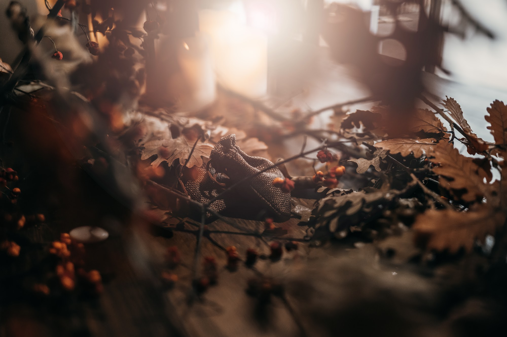
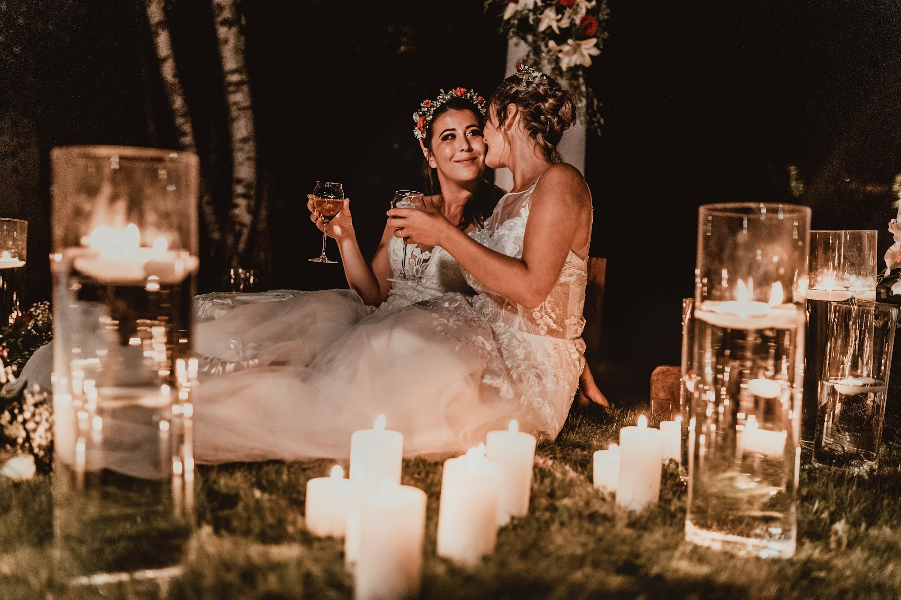
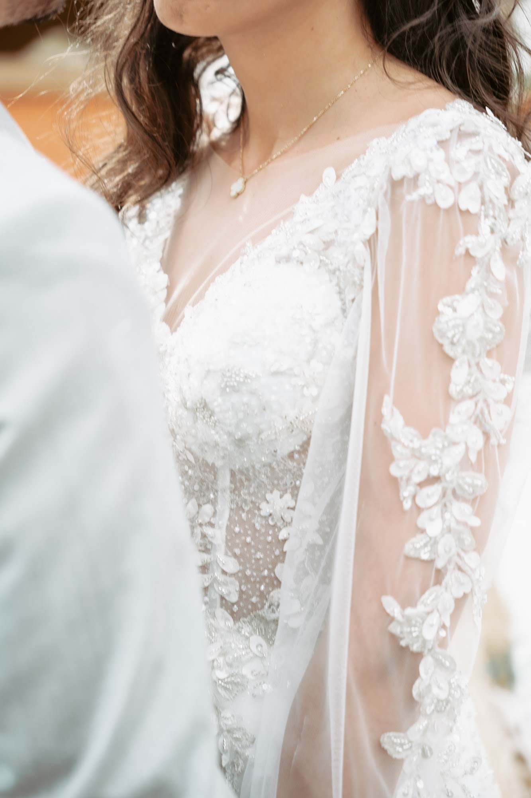
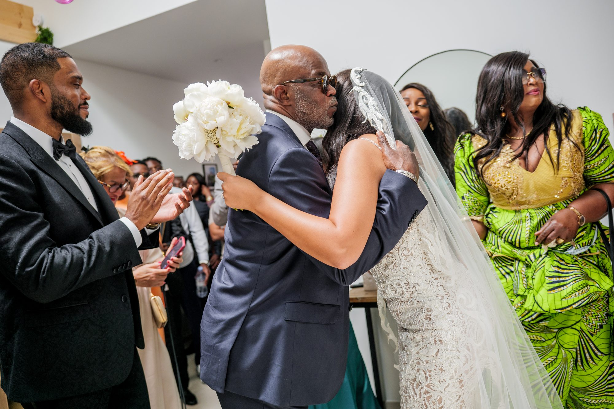
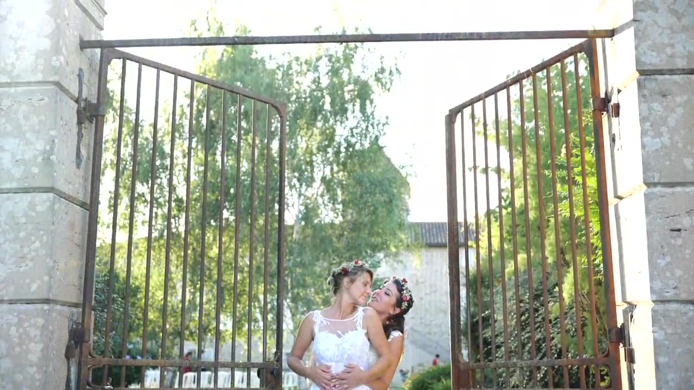

Organiser un mariage en hiver : l’élégance d’une saison à part
Quand on imagine un mariage en hiver, on pense souvent au froid ou aux journées courtes, pourtant cette saison réserve une atmosphère intime et chaleureuse incomparable. Loin de la cohue estivale, les mariés découvrent une toute autre façon de célébrer leur union, entourés d'une lumière douce et d'un confort feutré. En tant que photographe et vidéaste, je vois dans ces mois d'hiver une opportunité fantastique pour créer des images d'une élégance rare.

La lumière d'hiver : le secret des plus belles photos de mariage
Le grand avantage du mariage en hiver réside dans la qualité toute particulière de la lumière. En été, le soleil tape fort et crée des ombres très marquées sur les visages au milieu de la journée. En hiver, l'astre reste bas sur l'horizon tout au long de la journée, diffusant une clarté dorée et enveloppante.
Cette lumière d'hiver apporte une douceur incroyable à vos portraits de couple. Les teints sont sublimés naturellement, sans qu'il soit besoin de chercher désespérément l'ombre d'un arbre. De plus, le soleil se couche tôt, ce qui nous permet de capturer une golden hour magnifique juste avant d'entrer dans la salle de réception, sans interrompre le fil de la soirée.

Des lieux d'exception disponibles pour votre mariage hors saison
Choisir de se marier en hiver, c'est aussi s'ouvrir les portes des plus beaux domaines de Lyon, du Beaujolais ou des Alpes sans avoir à réserver trois ans à l'avance. Les calendriers des lieux de réception sont nettement plus souples en dehors de la période de mai à septembre.
Célébrer un mariage hors saison vous permet d'investir pleinement les espaces intérieurs. On redécouvre le charme des grandes salles en pierre, des cheminées qui crépitent et des salons anciens où vos invités se regroupent naturellement autour d'un cocktail chaleureux. L'ambiance devient tout de suite plus intime et feutrée.

Une ambiance feutrée et une scénographie aux chandelles

L'obscurité qui tombe tôt dans l'après-midi n'est pas un inconvénient, c'est un atout décoratif formidable. Elle permet de jouer pleinement avec les éclairages scéniques, les guirlandes lumineuses et une multitude de bougies sur les tables de banquets.
Sur le plan photographique et vidéo, cette atmosphère en clair-obscur offre un rendu visuel incroyable. Les reflets du cristal, la chaleur du bois, les touches de velours et la lueur des flammes créent un décor digne d'un éditorial de mode, idéal pour des photos de mariage en hiver pleines de caractère.
Une garde-robe élégante et des matières nobles

Se marier quand il fait frais offre des possibilités vestimentaires d'un raffinement extrême. Pour la mariée, c'est l'occasion de porter des manches longues en dentelle travaillée, une étole en fausse fourrure, un manteau structuré ou une cape majestueuse.
Du côté du marié, les costumes en laine peignée, en tweed ou en velours prennent tout leur sens. Ces matières apportent de la texture et du relief aux images. Personne ne souffre de la chaleur, les tenues restent impeccables du matin au soir, des préparatifs jusqu'à la piste de danse.
Des invités plus disponibles et détendus
En plein été, les week-ends s'enchaînent parfois à un rythme effréné pour vos proches, entre vacances familiales et invitations multiples. Un mariage en hiver arrive souvent comme une belle parenthèse au milieu de la saison froide.
Vos invités sont plus détendus, totalement présents et ravis de se retrouver autour d'une grande fête. L'ambiance générale gagne en authenticité. On prend le temps de discuter autour d'une boisson chaude, sans la fatigue liée aux fortes chaleurs de juillet.

Raconter une histoire différente en film et en images
En tant que vidéaste et photographe basé près de Lyon, j'aime la singularité des mariages d'hiver. Le contraste entre le froid extérieur et la chaleur humaine des intérieurs donne une dynamique narrative très forte à votre film de mariage.
Des gouttes de pluie ou quelques flocons sur une vitre, la vapeur qui s'échappe lors d'un rire à l'extérieur, le souffle vif avant une étreinte : tous ces petits détails sensoriels nourrissent mon travail pour créer un souvenir visuel vivant, fidèle à ce que vous avez ressenti.

Questions fréquentes
Comment faire des photos de couple s'il pleut ou s'il fait très froid ?
Il suffit de s'adapter en alternant de courtes sessions à l'extérieur avec des moments au chaud. Nous pouvons profiter des magnifiques salons intérieurs du domaine, des galeries ou utiliser des parapluies élégants pour des clichés très graphiques.
À quelle heure organiser la cérémonie civile ou laïque en hiver ?
Puisque la nuit tombe vers 17h, il est conseillé de programmer la cérémonie en début d'après-midi, idéalement vers 13h30 ou 14h. Cela permet de réaliser vos portraits de couple et les photos de groupe à la lumière du jour.
Est-il possible d'avoir un beau rendu vidéo malgré la tombée de la nuit précoce ?
Absolument. Les caméras professionnelles modernes gèrent parfaitement les basses lumières. L'ambiance féérique des bougies et des éclairages de la salle apporte un charme fou et très cinématique au film.
Dans quels lieux se marier en hiver autour de Lyon ?
La région Rhône-Alpes regorge de châteaux en pierre, de domaines viticoles du Beaujolais ou de chalets dans les Alpes françaises qui possèdent de grandes salles de réception chaleureuses avec cheminée, parfaites pour accueillir vos invités au chaud.
Vous envisagez de vous marier en hiver ? Écrivez-moi pour discuter de votre projet et imaginer ensemble le reportage photo et vidéo de votre journée.
Parlons de votre projet